←Parte I: La Desaparición del Pirata Zombie LeChuck→
El juego comienza en el barco, donde un pequeño pirata está disparando un cañón hacia el fuerte de la isla cercana. Obtén la baqueta del cañón en la pared y luego habla con el pequeño pirata. Dile "Soy Guybrush Threepwood, ¿quién eres tú?", después pregunta "¿Llevas una barba falsa?" y Guybrush reconocerá al pirata como Wally el cartógrafo del segundo juego de Monkey Island. Di "No estoy de humor para la publicidad" para recibir la literatura pirata. Luego, di "Eres un fracaso como pirata" y él amenazará con disparar. Selecciona cualquier opción de discurso en las siguientes dos selecciones y Wally admitirá que no es un pirata y dejará caer su gancho de plástico.
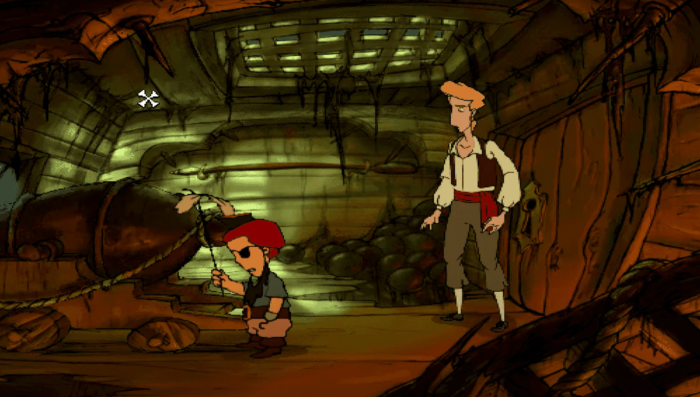Recoge el gancho de plástico y luego usa el cañón para ver a los secuaces de LeChuck, con el fuerte ardiendo al fondo. Mueve el cañón usando el ratón y dispara haciendo clic izquierdo para derrotar a los cuatro barcos, luego Guybrush volverá al barco. Mira por la ventana para ver a Murray en la tabla de abajo, quien es uno de los personajes más divertidos del juego. Abre el inventario para ver todos los objetos que se han recolectado hasta ahora. Usa el gancho de plástico con la baqueta para crear la pértiga, y luego usa la pértiga en los escombros para recuperar el brazo de Murray y el sable. Regresa al barco y usa el sable en la cuerda de restricción del cañón, luego usa el cañón para abrir la puerta del almacén.
Recoge la bolsa de monedas cerca del retrato de LeChuck para encontrar un anillo. Toma el anillo y úsalo en el ojo de buey para hundir el barco. Guybrush flotará hasta la superficie usando el dispositivo de flotación, donde se encuentra con Elaine Marley de los dos juegos anteriores. Él le pide a Elaine que se case con él y le entrega el misterioso anillo del almacén del tesoro, que Wally explica que en realidad tiene una maldición vudú. Cuando Elaine se da cuenta de que este regalo de Guybrush en realidad era solo un objeto del almacén del tesoro, intenta golpear a Guybrush pero se transforma en una estatua de oro sólido antes de tener la oportunidad.
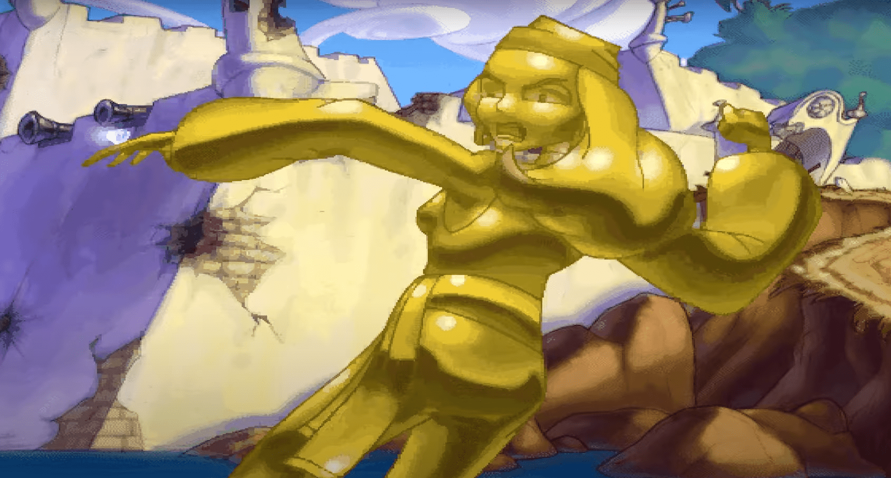Parte II: La Maldición se Agrava
Playa En este momento, no hay nada que podamos hacer por Elaine, así que toma la brasa brillante cerca de los restos del barco y sal del área para ver el mapa de la isla. Cada ubicación, excepto el fuerte, actualmente está marcada como '?' porque Guybrush aún no ha visitado esas áreas. Viaja hacia la zona brumosa cerca del lado izquierdo de Guybrush.
Pantano En este momento, Murray está clavado en la punta de la puerta. Después de asustar a Guybrush, deja de hablar con él y continúa por el camino hacia el barco naufragado. Una vez dentro, tira de la lengua del cocodrilo para revelar a la adivina de los dos juegos anteriores de Monkey Island. Di "Qué bonito lugar. Me encanta lo que has hecho con él.", y ella te preguntará si quieres ver fotos de sus hijos. Selecciona cualquier opción de diálogo y Guybrush explicará lo que le sucedió a Elaine.
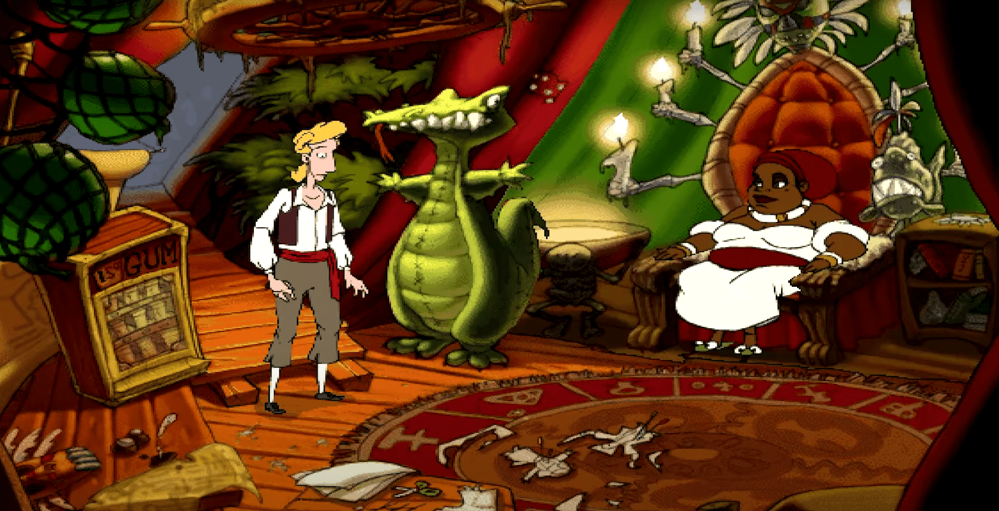Por supuesto, dejar una estatua de oro sólido en una playa de una isla pirata no es la cosa más sensata que se puede hacer. Cuando la adivina pregunte dónde se ha escondido la estatua, selecciona cualquier opción de diálogo para regresar a la playa y ver un barco pirata alejándose con la estatua. Cuando Guybrush regrese con la adivina, ella explicará que para romper la maldición, el anillo debe ser reemplazado por uno de mayor valor. Di "¿Dónde voy a encontrar un anillo de diamantes enorme y sin maldición?" para escuchar que se encuentra en la Isla de Sangre, donde ella dice que Guybrush morirá. Di "Ajá. ¿Entonces, hay algún anillo enorme y sin maldición en otras islas?", di "¿Cómo llego a la Isla de Sangre?" para descubrir que las tres cosas necesarias para viajar a la Isla de Sangre son un mapa, un barco y una tripulación. Deja de hablar con la adivina y recoge el alfiler del muñeco en el suelo. Usa la bolsa de monedas en la máquina expendedora de chicles para recibir un paquete de chicles. (En la dificultad Mega-monkey, también recoge la pasta del suelo). Sal del barco y regresa al mapa. Ingresa al lado derecho de Puerto Pollo, el pueblo en la esquina superior derecha del mapa.
Puerto Pollo Dirígete hacia la puerta en el lado izquierdo del reloj de la torre para entrar en el vestuario del teatro. Toma la varita mágica de la mesa y úsala en el sombrero de mago para revelar un libro de ventriloquia. Toma el libro, recoge la caspa del abrigo para obtener los piojos y luego toma el guante del abrigo pirata. (En la dificultad Mega-monkey, observa el abrigo para revelar la caspa, luego abre el bolsillo para obtener el guante). Sal del teatro y entra en el Barbery Coast en la esquina inferior derecha del pueblo. Usa el guante con Edward Van Helgen para retarlo a un duelo en el campo de honor en la parte superior del pueblo.
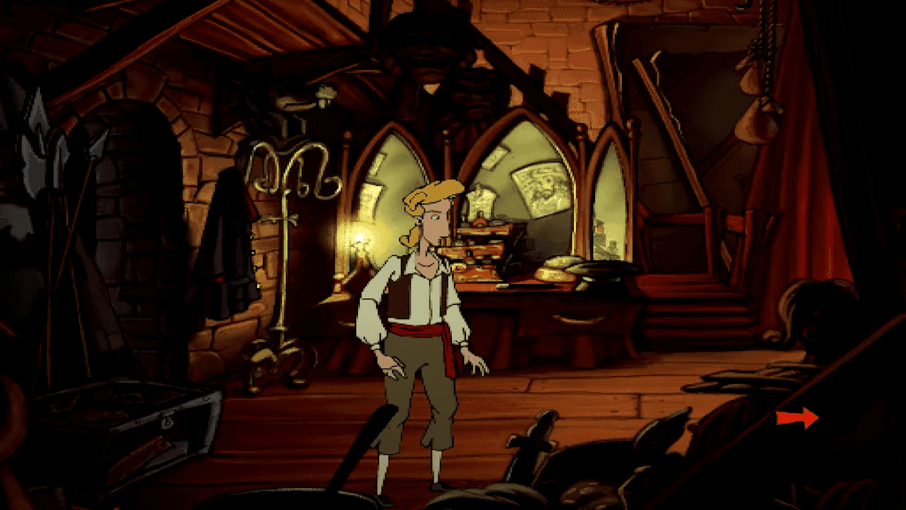Cuando Edward te pida que elijas un arma, cierra la tapa y abre el estuche de banjo para elegir el banjo. Edward tocará una canción en el banjo que termina con una cuerda al final de cada línea. Recuerda las cuatro cuerdas que se tocan y cópialas cuando Guybrush toque para completar la primera ronda del duelo. En la segunda ronda se tocan cinco cuerdas, así que cópialas cuando Guybrush toque. (En la dificultad Mega-monkey, se juega una tercera ronda donde se utilizan seis cuerdas). Cuando Edward comience a tocar la última ronda por sí mismo, mira la pila de armas y toma la pistola, luego úsala en el banjo de duelo para ganar el duelo.
Después del truco sucio que Guybrush usó para ganar, Edward está contento de ser el primer miembro de su tripulación. Cuando Hamish ponga el peine sobre la mesa, usa los piojos en él. Hamish cortará el pelo de Rottingham y lo echará fuera de la tienda. Siéntate en la silla de barbero y usa la manija que está al lado. Cuando suba en la silla, Guybrush pateará el pisapapeles del libro (En Mega-monkey, recoge el pisapapeles después de usar la manija una vez). Hamish saldrá de la habitación para encontrar otro pisapapeles, así que ahora podemos usar la manija al lado de la silla tres veces más para subir hasta el techo.
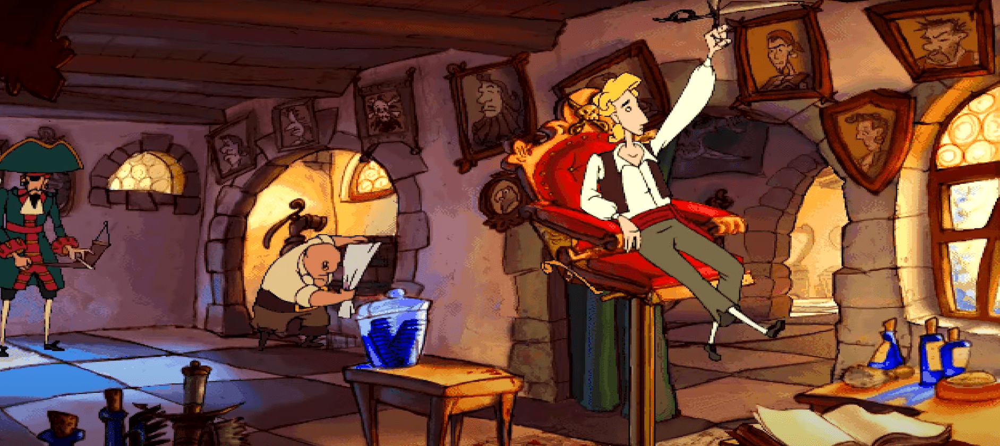Toma las tijeras del viga en el techo, y Guybrush bajará la silla cuando Hamish regrese. Toma el chupetón del suelo (En Mega-monkey, empuja a Cutthroat Bill dos veces primero para encontrar el chupetón), y sal de la barbería. Camina hacia el lado izquierdo del pueblo para ver las flores misteriosas en el lado izquierdo de la tienda del Capitán Blondebeard. Usa las tijeras con las flores misteriosas para obtener la flor de ipecacuana, luego usa las tijeras con el matorral para abrir paso a un claro con un letrero de serpiente. Mira el letrero, y entonces una serpiente grande caerá del árbol para comerse a Guybrush.
Toma los numerosos objetos encontrados en la serpiente, luego usa el jarabe de panqueque con la flor de ipecacuana para crear el jarabe de ipecacuana. Usa esto con la cabeza de la serpiente para aterrizar en el arena movediza debajo. Toma el carrizo hueco de los carrizos en el lado derecho de la arena movediza, luego toma una espina de la planta espinosa. Usa la espina con el carrizo hueco para crear la cerbatana. Todavía en el inventario, usa los globos de helio en el pisapapeles, luego sopla el globo flotante para que flote hacia la dirección del pollo. Usa la cerbatana en el globo, que explotará y soltará la vid del árbol. Después de salir de la arena movediza, sal de Danjer Cove e ingresa al lado izquierdo de Puerto Pollo.
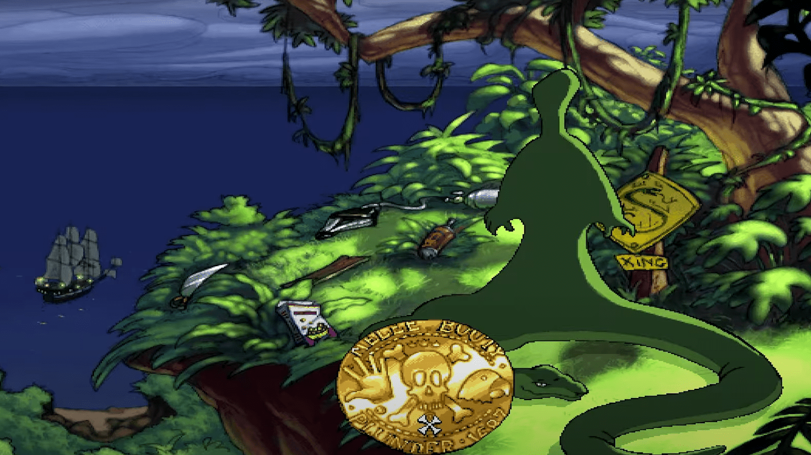Ingresa al lado izquierdo de Puerto Pollo y entra en la tienda del Capitán Blondebeard a la derecha. Cuando te pregunte si tienes una reserva, di "¡Por supuesto que tengo una reserva!", y Blondebeard te permitirá entrar en su tienda. Toma una de las galletas del barril en la esquina. Toma la tarjeta del club del plato en la mesa (En Mega-monkey, come la galleta para obtener las larvas, luego usa las larvas con el pollo asqueroso en la mesa para obtener la tarjeta del club). Empuja al cliente tranquilo y toma el cuchillo de pan dentado de su espalda.
Entrega el chupetón a Blondebeard para aflojar su diente de oro, luego dale el paquete de chicles. Cuando él sople la burbuja con el diente adentro, pópela con el alfiler y el diente caerá. Toma el diente de oro, luego sal de la tienda. (Para obtener el diente de oro en Mega-monkey, mastica el paquete de chicles para obtener el chicle mascado. Inhala del globo de helio, usa el diente de oro en el chicle mascado y luego mastica el diente en el chicle. Flotará por la ventana de la tienda y caerá en el charco de barro afuera. Usa el plato de pastel en el charco de barro para obtener el diente).
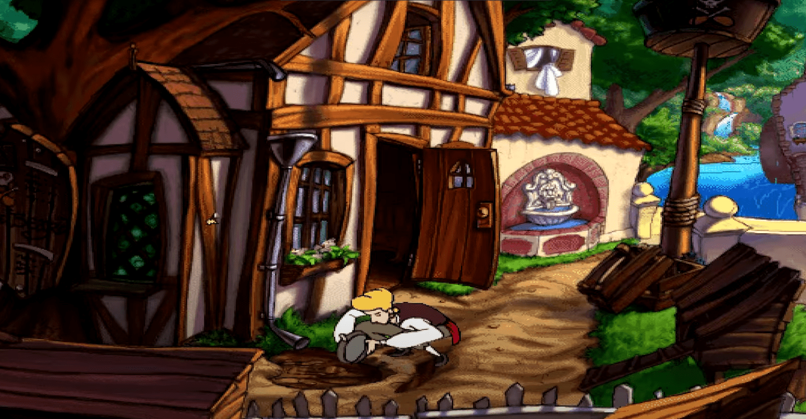Camina a través del arco en el lado derecho del reloj de la torre. Dirígete hacia el promontorio de hierba y usa el cuchillo de pan dentado con el caballete para derribarlo, lo que creará un rastro de ron que conducirá hacia el árbol de caucho. Usa la brasa en un palo con el rastro de ron, y la explosión del barril hará que el árbol de caucho caiga sobre la pila de troncos. (En Mega-monkey, camina hacia el oeste hasta el área en la parte inferior del promontorio de hierba y usa el cortador de galletas en los árboles de caucho en el lado derecho del área para obtener el tapón de goma).
Ingresa al Barbery Coast en la esquina inferior derecha del pueblo y muestra el diente de oro a Cutthroat Bill, quien aceptará convertirse en el segundo miembro de la tripulación. Habla con Haggis y dile "¿Te gustaría unirte a mi tripulación?", selecciona cualquier opción de diálogo para descubrir que Haggis quiere desafiar a Guybrush al lanzamiento de troncos. Di "¡Suena genial! ¡Vamos a hacerlo!" para viajar al área cerca del promontorio de hierba. Como hicimos explotar el árbol de caucho sobre la pila de troncos antes, cuando Guybrush lance el árbol, rebotará lejos por la pista y Haggis aceptará convertirse en el tercer y último miembro de la tripulación. Sal de Puerto Pollo y selecciona Danjer Cove en la esquina superior izquierda del mapa.
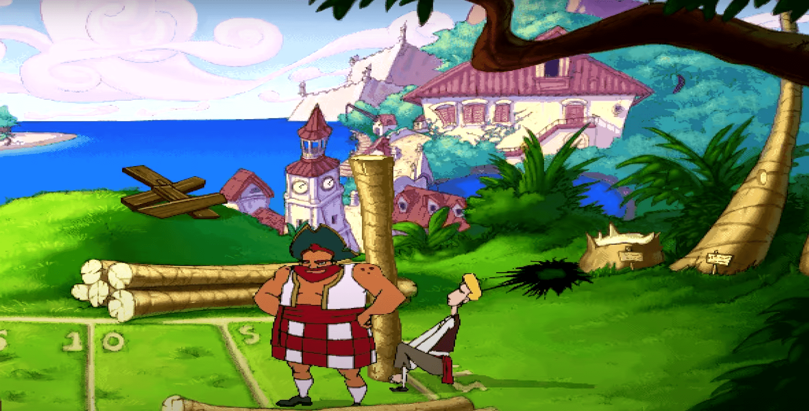Danjer Cove (En Mega-monkey, usa la pasta con el tapón de goma, luego usa el tapón de goma pegajoso con el agujero grande en el bote). Usa el bote y rema hacia la izquierda a través del agua hasta llegar al barco pirata. Usa el cuchillo de pan dentado con la tabla, luego sube al barco pirata para ser capturado por el Sr. Fossey, quien dice que el castigo por abordar el barco es ser untado con brea y emplumado, o caminar por la tabla. Selecciona cualquier opción de diálogo, y el Sr. Fossey decidirá untar y emplumar a Guybrush ya que la tabla ha sido serrada. Sal de Danjer Cove e ingresa al lado izquierdo de Puerto Pollo.
Puerto Pollo Ingresa a la tienda del Capitán Blondebeard, y él confundirá a Guybrush con el pollo demoníaco El Pollo Diablo. Selecciona cualquier opción de diálogo y Blondebeard enviará a Guybrush a la cocina del barco pirata en Danjer Cove.
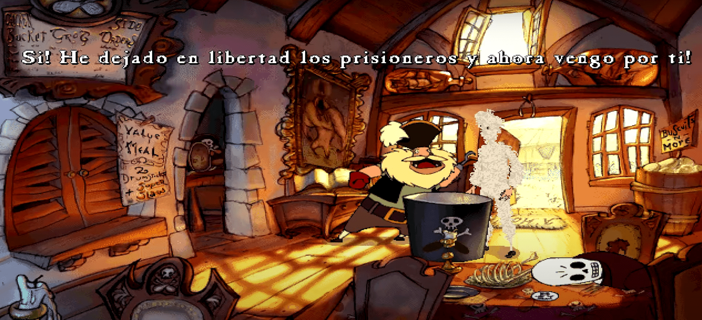Danjer Cove El Sr. Fossey cree que puede escuchar a LeChimp hablando, así que usa el libro de ventriloquia en LeChimp para dar algunas nuevas instrucciones. Después de que él salga de la cocina, Guybrush recuperará el mapa del tesoro del jarrón. Abre el ojo de buey y sal del barco, luego camina hacia la derecha para salir de Danjer Cove.
Camina por la puerta en el lado izquierdo del reloj de la torre hasta la sala de utilería del teatro. Sube las escaleras hasta el área de iluminación y jala la manija para encontrar la ubicación de Elaine. (En Mega-monkey, presiona estos botones para encontrar a Elaine: Abajo-derecha, arriba-izquierda, izquierda, abajo, derecha, arriba-derecha dos veces, derecha, abajo-izquierda). El actor en el escenario comenzará a hacer malabares con los cuchillos y está a punto de hacer malabares con las bolas de cañón a continuación, así que usa la grasa de pollo con las bolas de cañón. Después de que el actor deje caer la bola de cañón, camina hacia la derecha hasta el escenario y toma la pala para llevar la estatua de Elaine al barco pirata en Danjer Cove.
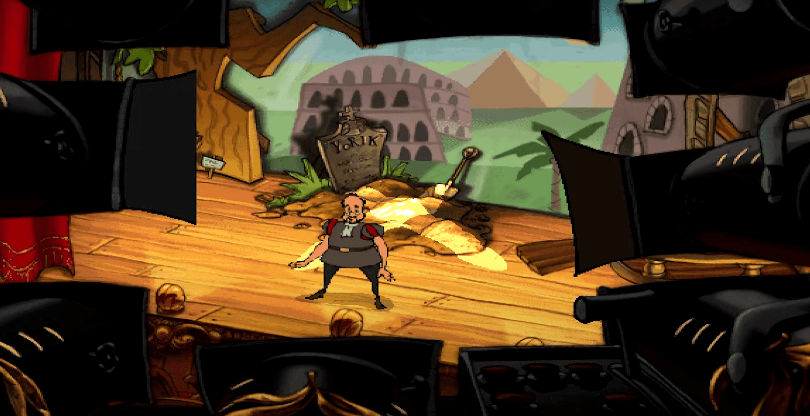Sal del barco, usa el bote para remar de regreso a la playa y luego camina hacia la derecha para salir de Danjer Cove. Selecciona la playa en el lado derecho de la isla. Playa de Azufre Muestra la tarjeta del club al camarero de la cabaña. Selecciona cualquier opción de diálogo y él te permitirá entrar en la playa exclusiva. Antes de ir allí, toma una de las toallas de la cesta y úsala en el cubo de hielo para hacerla húmeda. Usa la toalla húmeda en el camarero y él saldrá corriendo de su choza. Toma el aceite de cocina de dentro de la cabaña. Toma dos toallas más de la cesta y úsalas en el cubo de hielo. Camina hacia el norte hasta llegar a la playa y camina sobre la arena para descubrir que está demasiado caliente para cruzar. Usa las toallas húmedas para cruzar hacia el otro lado de la playa. Toma la taza y luego abre la puerta para regresar al mapa.
Camina hacia el lado izquierdo de Puerto Pollo y usa la taza con la taza en el puesto de limonada para obtener la taza infinita. Habla con el pequeño pirata y dile "Me gustaría comprar un poco de limonada", y Kenny huirá después de darse cuenta de que ha sido engañado. Toma la jarra de la mesa y úsala en el tinte rojo en el lado derecho para llenarla con tinte rojo. Sal de Puerto Pollo.
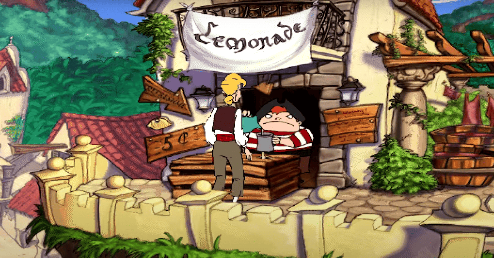Entrega la taza infinita al Palido, luego usa la jarra con el tinte rojo en la taza infinita. Palido pensará que tiene un bronceado y se volteará para revelar el mapa de la Isla de Sangre en su espalda. Usa el aceite de cocina en el mapa y luego toma el mapa de su espalda. Ahora tenemos los tres elementos que necesitamos, así que sal de la playa para abandonar la Isla del Botín en el barco pirata.
Parte III: Tres Hojas al Viento
Después de la escena, Rottingham abordará el barco para robar el mapa de la Isla de Sangre. La tripulación luego comenzará a cantar una canción de rima con la que Guybrush interactúa eligiendo diferentes opciones de diálogo. En el quinto verso, elige la línea "Seguro que evitaremos el escorbuto si todos comemos una naranja." para detener la canción. Luego, Haggis le preguntará a Guybrush si le gustaría luchar solo, o si prefiere que la tripulación ayude. La única diferencia aquí es que la dura batalla naval requiere más de una bala de cañón para hundir los barcos piratas enemigos.
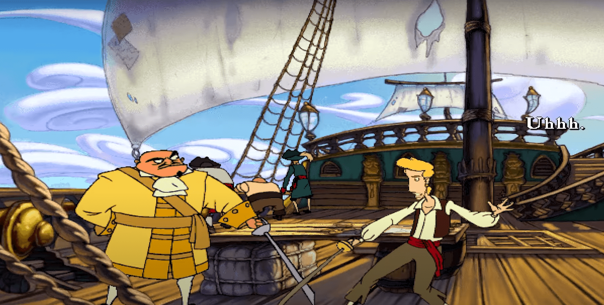Selecciona una de las opciones, luego mira el mapa de navegación para ver todos los barcos piratas en el área. En este momento, todos los barcos están representados por '?' ya que aún no los hemos enfrentado. Selecciona uno de los barcos para comenzar la batalla en alta mar. Selecciona un área en el mar haciendo clic izquierdo e intenta acercar el barco de Guybrush al otro barco pirata. Cuando lo hayas hecho, sigue haciendo clic derecho para disparar balas de cañón al barco. Después de derrotar al barco, Guybrush lo abordará para luchar contra el pirata.
Es tu turno primero para lanzar un insulto, así que elige cualquier opción de diálogo y lee la respuesta del pirata. Cada vez que elijas un insulto que el pirata no conoce la respuesta, avanzarás. Cada vez que elijas un insulto que el pirata sí conoce la respuesta, retrocederás y será el turno del pirata de responder una pregunta. Cuando el pirata dice un nuevo insulto, ese insulto se agrega a la lista de insultos de Guybrush. Cuando el pirata responde correctamente a un insulto, su respuesta se agrega a la lista de respuestas de Guybrush.
Si has decidido luchar contra los barcos sin ayuda de la tripulación, entonces mira el mapa de navegación y viaja al Puerto de Plunder Town para encontrarte con Kenny, quien ha cambiado de su ocupación anterior de vendedor de limonada a vendedor de armas de barco pirata. Háblale y dile "¿Qué tienes a la venta hoy?" para escuchar acerca de todas las armas que Kenny está vendiendo.
A medida que Guybrush derrota a los piratas más difíciles, podrá elegir armas más poderosas. Continúa derrotando a los diversos piratas hasta que tengas el cañón más poderoso: el Destructomático T-47, luego vence al barco de Rottingham para desafiarlo. Luego tendrás que luchar contra Rottingham de manera similar a como lo hiciste con los piratas. La lista completa de insultos y respuestas se puede encontrar en la sección tres de esta guía. Después de derrotar a Rottingham, Guybrush viajará a la Isla de Sangre.